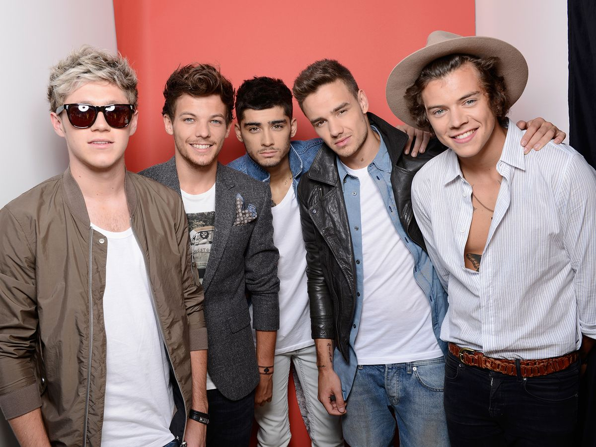

Sua Carreira
2010 a 2015 foi a época de sua participação na banda One Direction
Em abril de 2010, Styles fez o teste como concorrente solo para a sétima temporada do concurso britânico de canto televisionado The X Factor, cantando uma versão de "Isn't She Lovely" de Stevie Wonder. Avançou para o bootcamp, mas não conseguiu progredir ainda mais. Outros quatro em sua faixa etária que também foram eliminados foram reunidos para formar uma banda em julho de 2010 para competir na categoria "Grupos", orientado por Simon Cowell. O grupo composto por Styles, Niall Horan, Liam Payne, Louis Tomlinson e Zayn Malik praticou por duas semanas, Styles sugeriu o nome One Direction para seus companheiros de banda, e eles concordaram em mantê-lo. Eles começaram a ganhar popularidade considerável no Reino Unido, e nas primeiras quatro semanas dos shows ao vivo, foram o último ato de Cowell na competição. O grupo finalmente chegou à final do The X Factor e terminou em terceiro lugar.

Em janeiro de 2011, One Direction assinou um contrato de gravação com a gravadora de Cowell, Syco Records. Seu single de estreia número um no Reino Unido, "What Makes You Beautiful", e seu primeiro álbum de estúdio, Up All Night, foram lançados no final daquele ano.O álbum, que continha três canções co-escritas por Styles, fez do One Direction o primeiro grupo britânico a ter seu álbum de estreia alcançando o número um nos Estados Unidos. Seus quatro álbuns de estúdio sucessivos—Take Me Home (2012), Midnight Memories (2013), Four (2014) e Made in the A.M. (2015)—todos estrearam em primeiro lugar no Reino Unido. Midnight Memories foi o álbum mais vendido do mundo em 2013, e sua turnê Where We Are Tour foi a turnê de maior bilheteria de 2014 e continua sendo a turnê de maior bilheteria de todos os tempos por um grupo vocal. Após o lançamento de Four, One Direction se tornou o único grupo nos 58 anos de história da parada de álbuns Billboard 200 a ter seus primeiros quatro álbuns estreando no número um. Os álbuns geraram uma série de singles de sucesso, incluindo "Live While We're Young", "Little Things", "Best Song Ever", "Story of My Life", "Drag Me Down" e "History". Styles também co-escreveu a canção "Just a Little Bit of Your Heart" para o álbum de Ariana Grande, My Everything, de 2014.
A banda entrou em um hiato indefinido em 2016, após completar as atividades promocionais relacionadas ao Made in the A.M.Desde sua estreia, One Direction já vendeu 70 milhões de discos em todo o mundo, incluindo 7,6 milhões de álbuns e 26 milhões de singles nos EUA, tornando-se uma das boy bands mais vendidas de todos os tempos.
2016 início de sua carreira solo
Como artista solo, Styles se juntou à Full Stop Management de Jeffrey Azoff e à agência de talentos CAA, assinando um contrato de gravação com a Columbia Records no primeiro semestre de 2016.Nessa época, ele também lançou sua própria gravadora, Erskine Records. A gravação do álbum de estreia de Styles ocorreu ao longo de 2016 em Los Angeles, Londres e Port Antonio, Jamaica, onde Styles e seus colaboradores tiveram um retiro de composição de dois meses no outono. Em março de 2017, ele anunciou que seu primeiro single solo, "Sign of the Times", seria lançado em 7 de abril. A canção alcançou o primeiro lugar na UK Singles Chart e o quarto lugar na Billboard Hot 100 dos EUA. Uma balada soft rock influenciada pelo glam rock, atraiu comparações com o trabalho de David Bowie. A Rolling Stone classificou "Sign of the Times" como a melhor canção de 2017. Seu videoclipe apresentou Styles voando e andando sobre a água, e ganhou o Brit Award de Vídeo Britânico do Ano. Em abril, Styles foi um convidado musical no Saturday Night Live nos EUA e fez sua estreia solo na televisão do Reino Unido no The Graham Norton Show.
Seu álbum de estreia auto-intitulado foi lançado em maio de 2017, após o qual estreou no número um em vários países, incluindo Austrália, Reino Unido e EUA. O disco foi influenciado pelo soft rock dos anos 1970 e foi descrito pela Variety como um "coquetel clássico de psicodelia, britpop e balada". Recebeu críticas geralmente favoráveis dos críticos e foi incluído nas listas de várias publicações dos melhores álbuns de 2017. Harry Styles gerou mais dois singles, "Two Ghosts" e "Kiwi". O filme Harry Styles: Behind the Album, que documentou o processo de composição e gravação do álbum, foi lançado em maio exclusivamente no Apple Music. Styles embarcou em sua primeira turnê solo, Harry Styles: Live on Tour, de setembro de 2017 a julho de 2018, apresentando-se na América do Norte e do Sul, Europa, Ásia e Austrália.
Styles fez sua estreia no cinema no filme de guerra de Christopher Nolan, Dunkirk, em julho de 2017, interpretando um soldado britânico chamado Alex na Operação Dínamo durante a Segunda Guerra Mundial. Ele apareceu ao lado de um elenco que incluía Fionn Whitehead, Tom Glynn-Carney, Jack Lowden, Kenneth Branagh, Cillian Murphy, Mark Rylance e Tom Hardy. Styles ganhou o papel sobre "milhares de jovens"; Nolan mais tarde admitiu que não tinha conhecimento da extensão da fama de Styles e que ele foi escalado "porque ele se encaixava no papel maravilhosamente e realmente ganhou um lugar na mesa". O crítico de cinema do The Daily Telegraph, Robbie Collin, elogiou Styles por sua "performance brilhante, condenada e inesperadamente nada chocante".
Em novembro de 2017, a BBC One transmitiu Harry Styles at the BBC, um especial de televisão de uma hora apresentado por Nick Grimshaw. No ARIA Music Awards de 2017, Styles recebeu o prêmio de Melhor Artista Internacional. Ele foi o anfitrião do The Late Late Show with James Corden em dezembro. Juntamente com Jack Antonoff e Ilsey Juber, Styles co-escreveu "Alfie's Song (Not So Typical Love Song)", interpretada pela banda Bleachers, para a trilha sonora do filme Com Amor, Simon (2018). Ele também atuou como produtor executivo no seriado da CBS, Happy Together, que estreou em outubro de 2018 e foi inspirado por seu tempo morando com o produtor de televisão Ben Winston. Em 2018, Styles começou a modelar para a casa de moda italiana Gucci, aparecendo em várias campanhas para a marca.
Seu Estilo
A música de Styles foi descrita como soft rock, pop e rock, com elementos de folk e britpop. O estilo musical em seu álbum solo de estreia foi chamado de "mistura de rock clássico e baladas de Los Angeles" pela NME, invocando uma "vibração de soft rock intimamente emocional dos anos 70" pela Rolling Stone, e "influências do último meio século de rock" pela revista Time. Foi influenciado pelos artistas que cresceu ouvindo, como Pink Floyd, The Rolling Stones, The Beatles e Fleetwood Mac, além das composições de Harry Nilsson. Styles elogiou as letras de Nilsson como sendo "honestas e tão boas, e acho que é porque ele nunca está tentando soar inteligente". Seu segundo álbum solo, Fine Line, foi visto pela NME como tendo "esse som nostálgico [de seu primeiro disco] e combinado com sensibilidades pop crescentes".
Sua Discografia
- Harry Styles, 2017
- Fine Line, 2019
- Harr's House, 2022